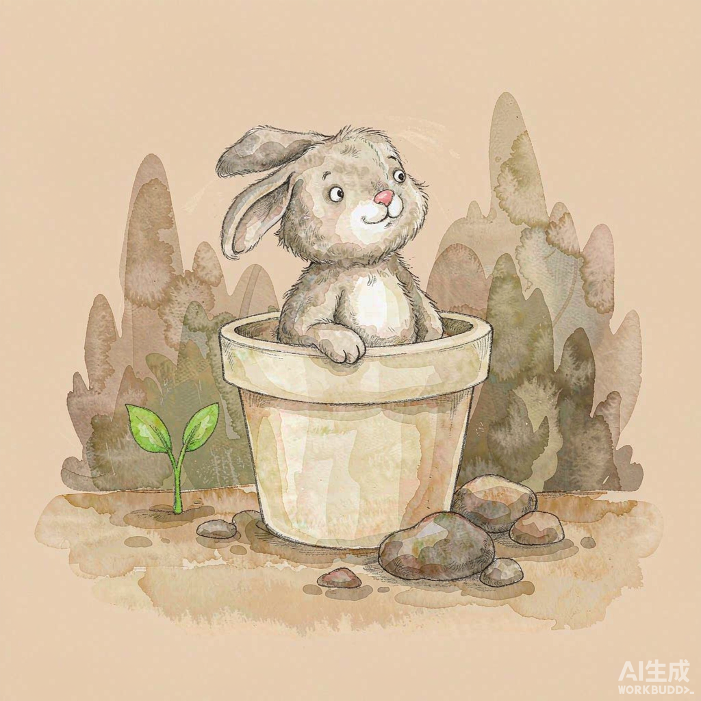
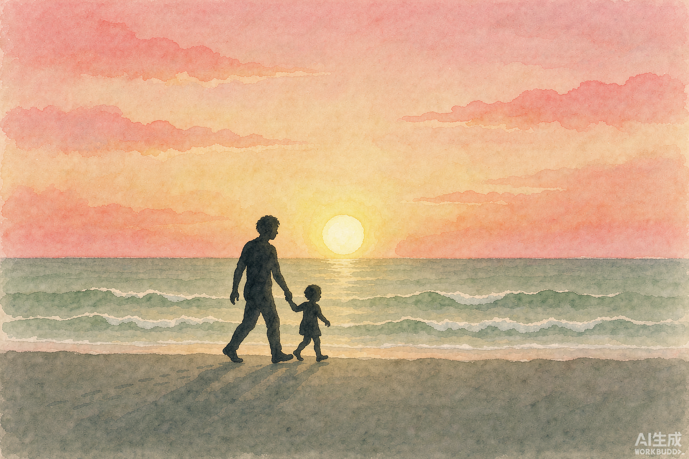
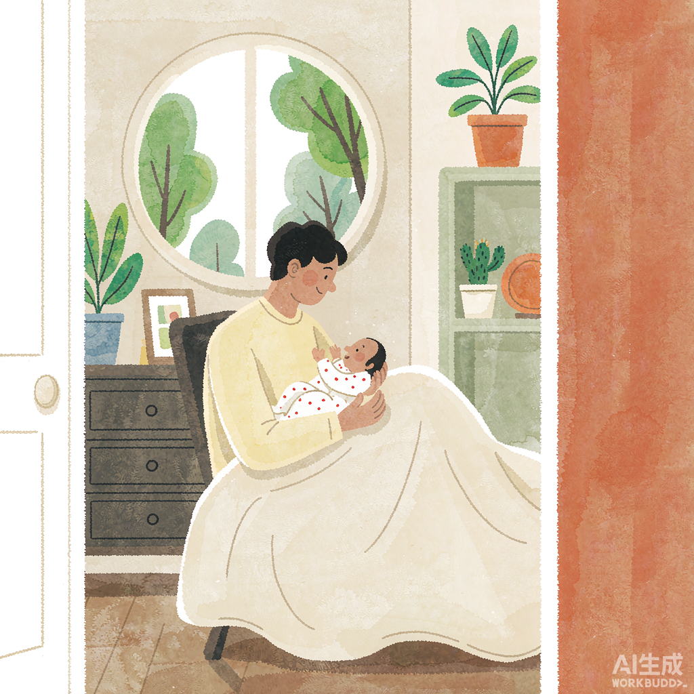

08 / Illustrations
插画与图像风格基准
本产品插画统一为「暖调水彩绘本风」：柔和边缘、低饱和、无写实照片感，人物以剪影/背影/侧脸为主，避免直接呈现婴幼儿面部细节。
风格参考图

空状态插画
温暖奶油底 + 小动物 + 萌芽元素，用于无记录 / 无搜索结果。

故事封面 16:9
粉橘晚霞 + 鼠尾草绿海面，人物剪影，预留顶部/底部文字区。

首次引导插画
明亮育婴室 + 绿植 + 亲子互动，传递温柔与安全。
AI 提示词模板
A gentle watercolor children's book illustration: [主体描述], warm cream and sage green color palette with soft coral/apricot accents, minimal clean background, picture book style, warm and safe mood, no text, no realistic photo, no scary or dark elements.
执行规范
✓ 推荐
- 水彩 / 水粉绘本风，边缘柔和
- 主色：奶油、鼠尾草绿、陶土橙、粉橘
- 人物以背影、剪影、侧脸为主
- 封面 16:9，头像/占位 1:1
- 留白给文字，主体占比 40–60%
✕ 禁用
- 写实照片风、3D 渲染、霓虹高饱和
- 恐怖、暗黑、血腥、过度夸张表情
- 直接呈现婴幼儿正面清晰五官
- 复杂背景抢占文字可读性
- 与品牌色冲突的冷色大色块
导出规格
| 场景 | 比例 | 格式 | 压缩 |
|---|
| 故事封面 | 16:9（1536×1024）+ 1:1（1024×1024） | WebP / PNG 兜底 | WebP 85% |
| 空状态 / 引导插画 | 1:1 或 4:3 | WebP / PNG | WebP 85% |
| 头像占位 | 1:1 | SVG / PNG | — |
| 加载失败兜底 | 随容器 | SVG（单色）/ PNG | — |